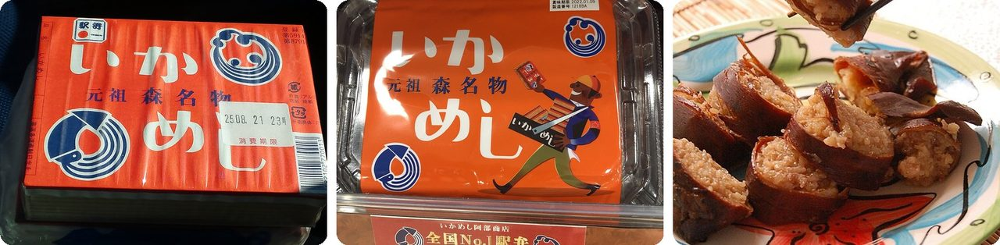
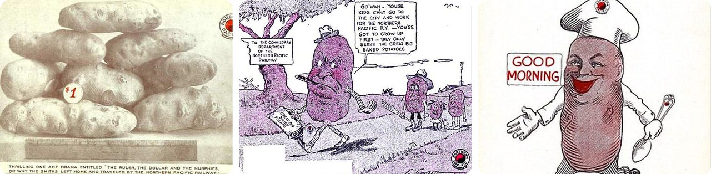
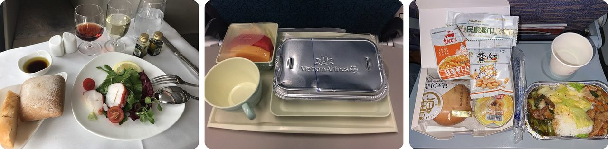

🌍 十大 火车和飞机上的离谱食物
2026年11月15日
1. 🇯🇵 日本新干线上的冰淇淋硬得根本吃不动
 日本新干线（子弹头列车）上卖的香草冰淇淋硬得出了名，网友干脆给它起了个外号，叫“新干线超硬冰淇淋”。从2021年起，这个玩笑名字还成了它的正式商品名。
日本新干线（子弹头列车）上卖的香草冰淇淋硬得出了名，网友干脆给它起了个外号，叫“新干线超硬冰淇淋”。从2021年起，这个玩笑名字还成了它的正式商品名。
原因是这样的：车厢里没有冰箱，所以推车用干冰给冰淇淋保冷。再加上它乳脂特别多，打进去的空气又很少。又冷又结实 → 塑料勺子根本插不进去，有时候连盖子都打不开。
厂家说，要等10分钟再吃。有人试过往上面倒热咖啡让它变软，结果咖啡反而冻住了。
这是一份自带10分钟倒计时的零食。
2. 🇯🇵 北海道一个火车站的招牌便当，是把米饭塞进整只鱿鱼里

1941年，第二次世界大战期间，日本缺米。北海道森站的一家便当商发现当时鱿鱼特别多，于是想了个办法：把一点点米饭塞进整只鱿鱼里，让米饭吃得更久。做法是：去掉鱿鱼的触须，把肚子掏干净，塞进米饭，再放进日式高汤里慢慢煮。用牙签封口，米饭就不会掉出来。
它叫鱿鱼饭（ikameshi）。1966年，它参加了东京一家百货公司举办的火车便当（ekiben）大会，到第二届就成了销量第一。现在它是大家专门去找的北海道美食。
说白了，鱿鱼本身就是饭盒。
3. 🇹🇼 台铁排骨便当停卖32年后回归，卖出的数量是预期的90倍
 台铁每年大约卖出五百万个便当。最经典的是排骨饭，配卤蛋、豆干和菜脯，吃饭时间由乘务员推着沿车厢走道叫卖。
台铁每年大约卖出五百万个便当。最经典的是排骨饭，配卤蛋、豆干和菜脯，吃饭时间由乘务员推着沿车厢走道叫卖。
有一款老排骨便当已经停卖了32年。2000年6月9日，它在铁路节上重新登场。台铁原本估计能卖1,000盒左右，结果卖出了九万多盒。
想象一下：你为义卖烤了1,000块饼干，门口却排了九万人。
4. 🇮🇳 印度火车上的奶茶，装在用完就扔的陶土杯里
 库尔哈德（kulhad）是一种没上釉的小陶土杯，就是设计成用一次就扔的。因为陶土是裸露的，热茶会有一点渗进杯壁里，很多人特别喜欢它给茶带来的那股“泥土香”。
库尔哈德（kulhad）是一种没上釉的小陶土杯，就是设计成用一次就扔的。因为陶土是裸露的，热茶会有一点渗进杯壁里，很多人特别喜欢它给茶带来的那股“泥土香”。
2004年，印度铁路在部长拉卢·普拉萨德·亚达夫的带领下，想把库尔哈德重新带回火车和车站。理由是：比塑料干净，对环境更友好，还能给村里的陶匠带来工作。
批评的人算了一笔账：铁路每年得处理掉大约18亿个陶杯，差不多每天500万个，而且每一个都得先放进烧燃料的窑里烧出来。
这就是一个纸杯，只不过纸换成了泥巴。
5. 🇷🇺 俄罗斯火车至今还用漂亮的金属杯托上茶
 杯托（podstakannik，俄语意思是“杯子底下的东西”）是一种带把手的金属托，套在一杯茶的玻璃杯外面。在家里，它们大多已经成了纪念品和礼物。但在俄罗斯铁路上，卧铺车厢和餐车每天都还在用。
杯托（podstakannik，俄语意思是“杯子底下的东西”）是一种带把手的金属托，套在一杯茶的玻璃杯外面。在家里，它们大多已经成了纪念品和礼物。但在俄罗斯铁路上，卧铺车厢和餐车每天都还在用。
原因就是晃。在摇摇晃晃的火车上，一杯没套东西的热茶很容易打翻、烫到人。有了杯托，杯子更稳，你握的是把手，而不是烫手的玻璃。它们在铁路上大规模使用，据说和1892年的谢尔盖·维特有关。
大多数杯托都出自科尔丘吉诺镇的同一家工厂，上面常常刻着建筑、城市和历史上的重要时刻。
你可以把它想成大人在颠簸火车上用的防洒杯。
6. 🇺🇸 一家美国铁路公司把“大到卖不出去”的土豆变成了吉祥物

1908年，负责北太平洋铁路餐车的黑曾·泰特斯听说，华盛顿州亚基马谷的农民在拿土豆喂猪。这些土豆每个重2到5磅，差不多和一袋面粉一样重，买家觉得这么大的土豆皮太粗，根本不能吃。泰特斯试着用小火慢慢烤，发现特别好吃。他把农民种出来的2磅以上的土豆全都买了下来，从1909年起在火车上供应。“超大烤土豆”成了这家铁路公司用了大约50年的口号。
更离谱的是，1914年，铁路公司在西雅图厨房大楼的屋顶上装了一个40英尺长的烤土豆招牌。它会发光，眼睛会眨，顶上的一块黄油还会一闪一闪地亮。
说白了，猪的饭变成了菜单上的明星。
7. 🇺🇸 泛美航空第一次飞行，只给乘客发口香糖
 泛美航空第一次飞行时，根本没有餐食。唯一发给乘客的是口香糖，用来预防晕机。
泛美航空第一次飞行时，根本没有餐食。唯一发给乘客的是口香糖，用来预防晕机。
那时候的飞机又吵又不舒服，乘客常常是第一次坐飞机，心里很紧张。
世界上最早的飞机餐是1919年在伦敦到巴黎的航线上提供的：可以选三明治和水果。后来泛美航空成了第一家在飞行中加热食物的航空公司。
整份机上菜单，装进口袋就够了。
8. 🍱 冷冻飞机餐启发了电视晚餐

第二次世界大战后，一位名叫威廉·马克森的海军老兵发明了“天空餐盘”，就是一种在飞机上加热的冷冻餐。它最早是为了让海军士兵吃上热饭。泛美航空开始在飞机上供应这种现成的冷冻餐。它们启发了美国超市里卖的电视晚餐。航空公司特别喜欢它，理由很简单：航班取消的时候，冷冻食物不会浪费。
今天大多数经济舱餐食还是这么做的：提前做好、冷冻起来，再在飞机的厨房里加热。
换句话说，每一份微波炉晚餐，都带着一点飞机餐的影子。
9. 🫒 美国航空拿掉一颗橄榄，一年省下4万美元
 1987年，美国航空的老板罗伯特·克兰德尔据说让人把头等舱餐里沙拉上的一颗橄榄拿掉了。没有一个人发现。
1987年，美国航空的老板罗伯特·克兰德尔据说让人把头等舱餐里沙拉上的一颗橄榄拿掉了。没有一个人发现。
一颗橄榄很小。可是乘上每个航班的每一份头等舱沙拉，一整年下来，航空公司最多省下了4万美元。
克兰德尔以省钱出名。他自己讲过另一个故事：他把加勒比海一个仓库的保安一减再减，最后剩下的唯一“保安”，是一段狗叫的录音。
这就像每个甜甜圈上少放一粒糖珠，省下的钱能买一辆车。
10. 🇧🇪 Biscoff饼干的名字来自一笔飞机零食生意
 莲花（Lotus）是一家比利时烘焙公司，做一种脆脆的焦糖香料饼干。1986年，它和达美航空谈成了一笔生意：把饼干发给乘客，代替花生。
莲花（Lotus）是一家比利时烘焙公司，做一种脆脆的焦糖香料饼干。1986年，它和达美航空谈成了一笔生意：把饼干发给乘客，代替花生。
一位达美员工说，“Biscoff”这个名字就是他当时想出来的，不过莲花公司不同意这个说法。不管怎样，这个牌子后来传遍了全世界，别的航空公司也开始送这种饼干。
换句话说，飞机上换了一次零食，就换出了一块全世界都认识的饼干。
趣闻
和拿掉一颗橄榄正好相反的，是协和式飞机，也就是法国航空和英国航空飞的超音速客机。它的乘客能吃到3到6道菜，有龙虾和松露，用精美瓷器盛着，有时候还是名厨在飞机上亲手做的。它飞得高，远远高过颠簸的气流，空乘端着放了15个杯子的托盘，走在16英寸宽的过道上，杯里的酒连一丝波纹都没有。到2003年，往返一趟要12,000美元。这让人忍不住好奇：还有哪些了不起的机器，在我们大多数人还没机会坐上之前就退役了？
图片来源（Wikimedia Commons）
- #1: Meiraku's Sujahta High quality super premium ice cream in Shinkansen 2014.jpg by Ippei Suzuki, CC BY 2.0
- #1: シンカンセンスゴイカタイアイス ショーケース.jpg by Indiana jo, CC BY-SA 4.0
- #1: Sujahta Super Premium Ice Cream vending machine.jpg by 電車(新幹線)でゴー！, CC BY-SA 4.0
- #2: Mori-ikameshi.JPG by Gpx-evo, CC BY-SA 4.0
- #2: Ika-Meshi-1.jpg by Evelyn-rose, CC0
- #2: Ikameshi 001.jpg by Derral Chen, CC BY-SA 2.0
- #3: TRA Taichung Railways Restaurant pork ribs rice box 20180722b.jpg by yunlin2003, CC BY 2.0
- #3: TRA Taipei Railways Restaurant pork ribs rice box 20120826.jpg by ayustety, CC BY-SA 2.0
- #3: TRA Taichung Railways Restaurant pork ribs rice box (23822844139).jpg by Chi-Hung Lin, CC BY-SA 2.0
- #4: Kulhad Chai.jpg by Gannu03, CC BY-SA 4.0
- #4: Garam Chai.jpg by Mihir0699, CC BY-SA 4.0
- #4: Kulhad wali chai.jpg by Akshay Sanjay Agrawal, CC BY-SA 4.0
- #5: Стакан чаю подстаканник.JPG by V.Vizu, CC BY-SA 3.0
- #5: Glasingo 240224 14.jpg by VladimirPF, CC BY-SA 4.0
- #5: Rzd chai.png by Morido, CC BY-SA 3.0
- #6: Northern Pacific Railway big baked potato circa 1910s.JPG by Northern Pacific Railway, Public domain
- #6: Northern Pacific Great Big Baked Potato comic postcard.jpg by Northern Pacific Railway, Public domain
- #6: Northern Pacific Potato Chef.jpg by Northern Pacific Railway, Public domain
- #7: Passengers boarding Pan-Am Airways Fokker airplane, 1928.jpg by The New York Times, Public domain
- #7: Fruit-Stipe-Gum-Sticks.jpg by Evan-Amos, Public domain
- #7: Sikorsky S-38 Pan American Airways L'Aéronautique March,1929.jpg by L'Aéronautique magazine, Public domain
- #8: Airline meal asiana.jpg by Architxture, CC BY-SA 4.0
- #8: Vietnam Airlines - In-Flight Meal - with Fruit.jpg by Wiki.cullin, CC BY-SA 4.0
- #8: Inflight meal on 3U8210 (20230927184832).jpg by N509FZ, CC BY-SA 4.0
- #9: Fresh green olives and black olives served at a food display.jpg by Shixart1985, CC BY 2.0
- #9: Continental Airlines domestic First Class dinner.jpg by Alex Steffler from Houston, TX, US, CC BY 2.0
- #9: American Airlines - N972TW - Flickr - skinnylawyer.jpg by skinnylawyer from Los Angeles, California, USA, CC BY-SA 2.0
- #10: 2020-02-25 11 41 14 A Lotus Biscoff cookie in the Franklin Farm section of Oak Hill, Fairfax County, Virginia.jpg by Famartin, CC BY-SA 4.0
- #10: Lotus biscoff vanilla flavour (1).jpg by Fumikas Sagisavas, CC0
- #10: Biscoff coffee corner on Pier 39, San Francisco, 2011.jpg by DimiTalen, CC0


.jpg){kind=link}


.jpg){kind=link}


.jpg){kind=link}